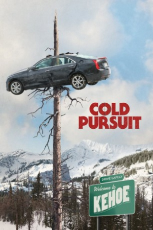

Country:France, 119 minutes
Spoken languages:English
Genres:Action, Crime, Thriller
Director(s):Hans Petter Moland
Writer(s):Frank Baldwin
Video Codec:Unknown
Number: 2407


Certification:R
Storyline:
The quiet family life of Nels Coxman, a snowplow driver, is upended after his son's murder. Nels begins a vengeful hunt for Viking, the drug lord he holds responsible for the killing, eliminating Viking's associates one by one. As Nels draws closer to Viking, his actions bring even more unexpected and violent consequences, as he proves that revenge is all in the execution.
Cast:
Medium: Original DVD,
Loaned: No
Aspect ratio: Unknown